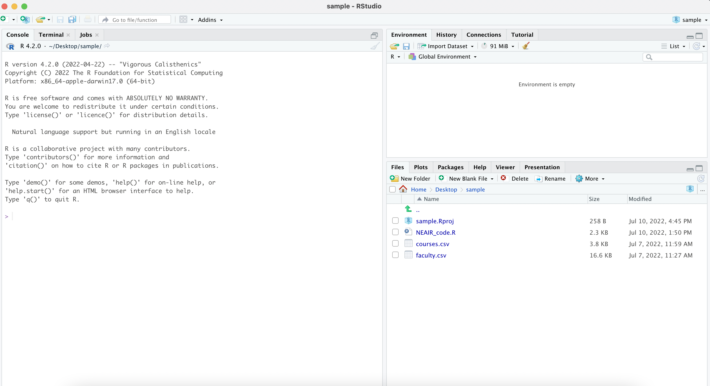
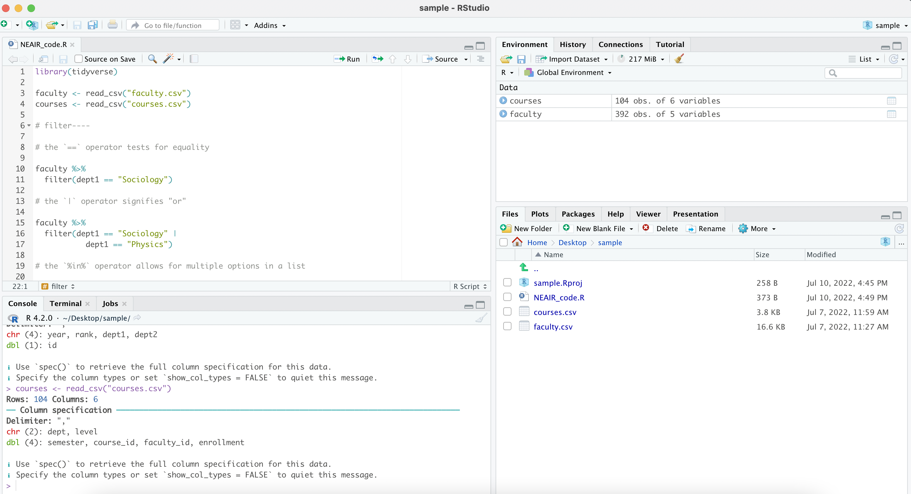
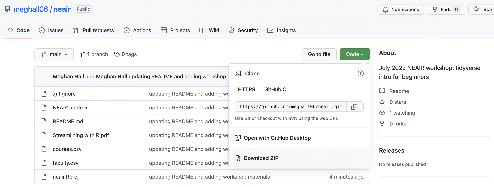
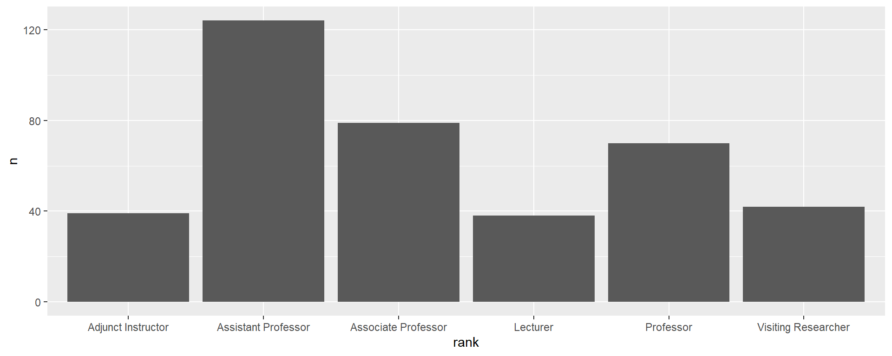
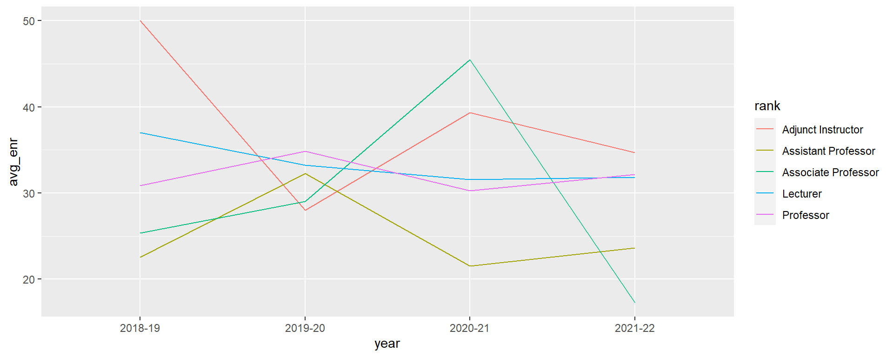

Stroomlijnen met R
NEAIR
July 12, 2022
Harrie Jonkman
Februari 9, 2023
Huishoudelijke mededelingen
- Intro üëã
- Materialen workshop ⬇️
- Pauze üïò
- Aan het einde ✔️
- Het plan vandaag üìã
Het plan vandaag
- Wat is R? Hoe kan het de last van herhaalde rapportering verlichten?
- Basis functies voor het manipuleren van data
- R effectief gebruiken
- Meer datamanipulatie
- Visualiseren van data
- Een piek bij ingewikkelde onderwerpen
Wat is R?
1 2 3 4 5 6
Wat is R?
1 2 3 4 5 6
R is een open-source (vrij te gebruiken!) programmeertaal voor het werken met data
De voordelen van R
1 2 3 4 5 6
Mijn persoonlijke Excel nachtmerrie
Het magische van R is dat het reproduceerbaar is (door iemand anders of jouwzelf later)
Hou data apart van de code (stappen datavoorbereiding)
R binnenhalen
1 2 3 4 5 6
Je hebt de R-taal nodig
En ook de software
Navigeren in RStudio
1 2 3 4 5 6

project files vind je hier
geïmporteerde data komen hier
code kan hier komen
Navigeren in RStudio
1 2 3 4 5 6

project files komen hier
geïmporteerde data hier
code kan ook
hier komen
Gebruik van R
1 2 3 4 5 6
Je gebruikt R via pakketten
…die functies omvatten
…of gewoon werkwoorden zijn

Data van vandaag
1 2 3 4 5 6
faculteit
| year | id | rank | dept1 | dept2 |
|---|---|---|---|---|
| 2021-22 | 1005 | Lecturer | Chemistry | |
| 2021-22 | 1022 | Professor | Physics | Engineering |
| 2021-22 | 1059 | Professor | Physics | |
| 2021-22 | 1079 | Lecturer | Music | |
| 2021-22 | 1086 | Assistant Professor | Music | |
| 2021-22 | 1095 | Adjunct Instructor | Sociology |
Data van vandaag
1 2 3 4 5 6
cursussen
| semester | course_id | faculty_id | dept | enrollment | level |
|---|---|---|---|---|---|
| 20212202 | 10605 | 1772 | Physics | 7 | UG |
| 20212202 | 10605 | 1772 | Physics | 32 | GR |
| 20212202 | 11426 | 1820 | Political Science | 8 | UG |
| 20212202 | 12048 | 1914 | English | 24 | UG |
| 20212202 | 13269 | 1095 | Sociology | 48 | UG |
| 20212202 | 13517 | 1086 | Music | 17 | UG |
Basis datamanipulatie
1 2 3 4 5 6
Bruikbare operaties
1 2 3 4 5 6
<-
“opslaan als”
opt + -
%>%
“en dan”
Cmd + shift + m
Algemene functies
1 2 3 4 5 6
filter rijen houden of laten verdwijnen (observaties)
select kolommen houden of laten verdwijnen (variabelen)
arrange sorteren van data op basis van bepaalde variabele(n)
count telt data op basis van bepaalde variabele(n)
mutate creëert nieuwe variabelen
group_by/summarize aggregeert data (pivot tables!)
str_* functies werken makkelijk met tekst
Syntax of een functie
1 2 3 4 5 6
function(data, argument(s))
is hetzelfde als
data %>%
function(argument(s))
Filter
1 2 3 4 5 6
filter houdt of doet rijen verdwijnen (observaties)
de == operator zorgt voor gelijkheid
| year | id | rank | dept1 | dept2 |
|---|---|---|---|---|
| 2021-22 | 1095 | Adjunct Instructor | Sociology | |
| 2021-22 | 1118 | Assistant Professor | Sociology | |
| 2021-22 | 1161 | Assistant Professor | Sociology | |
| 2021-22 | 1191 | Professor | Sociology | |
| 2021-22 | 1216 | Associate Professor | Sociology | American Studies |
| 2021-22 | 1273 | Assistant Professor | Sociology |
Filter
1 2 3 4 5 6
de | operator betekent “of”
| year | id | rank | dept1 | dept2 |
|---|---|---|---|---|
| 2021-22 | 1022 | Professor | Physics | Engineering |
| 2021-22 | 1059 | Professor | Physics | |
| 2021-22 | 1095 | Adjunct Instructor | Sociology | |
| 2021-22 | 1118 | Assistant Professor | Sociology | |
| 2021-22 | 1161 | Assistant Professor | Sociology | |
| 2021-22 | 1191 | Professor | Sociology |
Filter
1 2 3 4 5 6
de %in% operator is toegestaan voor verschillende opties in een list
| year | id | rank | dept1 | dept2 |
|---|---|---|---|---|
| 2021-22 | 1022 | Professor | Physics | Engineering |
| 2021-22 | 1059 | Professor | Physics | |
| 2021-22 | 1079 | Lecturer | Music | |
| 2021-22 | 1086 | Assistant Professor | Music | |
| 2021-22 | 1095 | Adjunct Instructor | Sociology | |
| 2021-22 | 1118 | Assistant Professor | Sociology |
Filter
1 2 3 4 5 6
de & operator combineert voorwaarden
| year | id | rank | dept1 | dept2 |
|---|---|---|---|---|
| 2021-22 | 1022 | Professor | Physics | Engineering |
| 2021-22 | 1059 | Professor | Physics | |
| 2021-22 | 1191 | Professor | Sociology | |
| 2021-22 | 1201 | Professor | Physics | |
| 2021-22 | 1209 | Professor | Music | |
| 2021-22 | 1421 | Professor | Physics | Engineering |
Select
1 2 3 4 5 6
select houdt of doet kolommen verdwijnen (variabelen)
Select
1 2 3 4 5 6
kan kolommen weggooien met -column
Select
1 2 3 4 5 6
de pipe %>% verandert verschillende functies in een keer
Arrange
1 2 3 4 5 6
arrange sorteert dataset op basis van bepaalde variabele(n)
gebruik desc() om volgorden te laten aflopen
| semester | course_id | faculty_id | dept | enrollment | level |
|---|---|---|---|---|---|
| 20212201 | 10511 | 1005 | Chemistry | 50 | UG |
| 20212201 | 15934 | 1421 | Physics | 50 | UG |
| 20192002 | 13850 | 1105 | Chemistry | 50 | UG |
| 20181901 | 17773 | 1942 | Music | 50 | UG |
| 20212202 | 13269 | 1095 | Sociology | 48 | UG |
| 20202101 | 16202 | 1816 | Political Science | 48 | UG |
Arrange
1 2 3 4 5 6
kan sorteren op basis van verschillende variabelen
| semester | course_id | faculty_id | dept | enrollment | level |
|---|---|---|---|---|---|
| 20212201 | 10511 | 1005 | Chemistry | 50 | UG |
| 20192002 | 13850 | 1105 | Chemistry | 50 | UG |
| 20202102 | 13850 | 1258 | Chemistry | 39 | UG |
| 20202102 | 16606 | 1393 | Chemistry | 38 | UG |
| 20202101 | 16540 | 1784 | Chemistry | 38 | UG |
| 20181901 | 10511 | 1829 | Chemistry | 36 | UG |
Count
1 2 3 4 5 6
count telt dataset op basis van bepaalde variabele(n) (heel handig om de data te leren kennen)
Count
1 2 3 4 5 6
kan sort = TRUE gebruiken om resultaten te ordenen
Mutate
1 2 3 4 5 6
mutate creëert nieuwe variabelen (met een =)
| year | id | rank | dept1 | dept2 | new |
|---|---|---|---|---|---|
| 2021-22 | 1005 | Lecturer | Chemistry | hello! | |
| 2021-22 | 1022 | Professor | Physics | Engineering | hello! |
| 2021-22 | 1059 | Professor | Physics | hello! | |
| 2021-22 | 1079 | Lecturer | Music | hello! | |
| 2021-22 | 1086 | Assistant Professor | Music | hello! | |
| 2021-22 | 1095 | Adjunct Instructor | Sociology | hello! |
Mutate
1 2 3 4 5 6
veel handiger met een conditionele zoals ifelse(), die drie argumenten heeft:
voorwaarde, als het waar is, als het niet waar is
Mutate
1 2 3 4 5 6
de ! operator betekent niet
is.na() identificeert lege waarden
Mutate
1 2 3 4 5 6
met verschillende voorwaarden is case_when() veel handiger!
| dept1 | division |
|---|---|
| Chemistry | Sciences |
| Physics | Sciences |
| Physics | Sciences |
| Music | Humanities |
| Music | Humanities |
| Sociology | Social Sciences |
Group by / summarize
1 2 3 4 5 6
group_by/summarize aggregeert data (pivot tables!)
group_by() identificeert de groepvariabele(n) en summarize() specificeert de aggregatie
Group by / summarize
1 2 3 4 5 6
bruikbare argumenten met summarize:
mean, median, sd, min, max, n
Gebruik R effectief
1 2 3 4 5 6
Werken in RStudio
1 2 3 4 5 6
projectfiles komen hier
geïmporteerde data komen hier
code kan ook
hier komen
Werken in RStudio
1 2 3 4 5 6
In de console typen
Het is zoiets als een post-it: makkelijk voor snelle handelingen maar voor eenmalig gebruik
acties worden doorgevoerd maar de code niet
maar een codechunck is een handeling per keer (
Return)
In een codefile typen
scriptfiles hebben een
.Rextensiecode wordt bewaard en onderdelen van welke lengte ook kunnen opnieuw gerund worden (
Cmd + Return)doe ~95% van jouw typen in een codefile in plaats van in de console!
Werken met pakketten
1 2 3 4 5 6
pakketten moeten geïnstalleerd zijn op ieder computer die je gebruikt
pakketten moeten geladen worden met library() aan het begin van elke sessie
krijg toegang tot helpfiles door ??tidyverse of ??mutate in de console in te typen
Organiseren met projecten
1 2 3 4 5 6
sterk aanbevolen om projects te gebruiken om georganiseerd te blijven
hou codefiles en datafiles bij elkaar voor betere filepad-navigatie en voor betere reproduceerbare werkgewoonten
Organiseren met projecten
1 2 3 4 5 6
projectfiles komen hier
geïmporteerde data verschijnen hier
code kan ook
hier komen
Toegang tot workshopmaterialen
1 2 3 4 5 6

Klik op de groene Codeknop en selecteer “Download ZIP”, en open neair.Rproj
Toegang data
1 2 3 4 5 6
gebruik read_csv() om een csv-file te importeren
het readxl pakket is behulpzaam voor Excelfiles
Bekijk de data met View(faculty) of klik op de datanaam in het Environment paneel
Meer datamanipulatie
1 2 3 4 5 6
Stringr functies
1 2 3 4 5 6
functions van stringr (die allemaal beginnen met str_) zijn behulpzaam als je met tekstdata werkt
| year | id | rank | dept1 | dept2 |
|---|---|---|---|---|
| 2021-22 | 1022 | Professor | Physics | Engineering |
| 2021-22 | 1059 | Professor | Physics | |
| 2021-22 | 1086 | Assistant Professor | Music | |
| 2021-22 | 1118 | Assistant Professor | Sociology | |
| 2021-22 | 1158 | Assistant Professor | Political Science | |
| 2021-22 | 1161 | Assistant Professor | Sociology |
Stringr functies
1 2 3 4 5 6
cheatsheet met functies hiervan vind je hier
Omdraaien van data
1 2 3 4 5 6
de faculteit data hebben een rij per departement, sommige met meerdere departementen (vaak bekend als wijde data)
| year | id | rank | dept1 | dept2 |
|---|---|---|---|---|
| 2021-22 | 1005 | Lecturer | Chemistry | |
| 2021-22 | 1022 | Professor | Physics | Engineering |
| 2021-22 | 1059 | Professor | Physics | |
| 2021-22 | 1079 | Lecturer | Music | |
| 2021-22 | 1086 | Assistant Professor | Music | |
| 2021-22 | 1095 | Adjunct Instructor | Sociology |
Omdraaien van data
1 2 3 4 5 6
wat als je één rij per faculteit per department wilt? (vaak bekend als lange data)
| year | id | rank | dept_no | dept |
|---|---|---|---|---|
| 2021-22 | 1005 | Lecturer | dept1 | Chemistry |
| 2021-22 | 1022 | Professor | dept1 | Physics |
| 2021-22 | 1022 | Professor | dept2 | Engineering |
| 2021-22 | 1059 | Professor | dept1 | Physics |
| 2021-22 | 1079 | Lecturer | dept1 | Music |
| 2021-22 | 1086 | Assistant Professor | dept1 | Music |
Omdraaien van data
1 2 3 4 5 6
de pivot_longer functie verlengt data
Omdraaien van data
1 2 3 4 5 6
en pivot_wider werkt in tegengestelde richting!
| semester | course_id | faculty_id | dept | enrollment | level |
|---|---|---|---|---|---|
| 20212202 | 10605 | 1772 | Physics | 7 | UG |
| 20212202 | 10605 | 1772 | Physics | 32 | GR |
Data laten aansluiten
1 2 3 4 5 6
R heeft handige functies voor het omgaan met relationele data
alles wat je nodig hebt is een key variable die datasets met elkaar verbindt
left_join is het meest algemeen, maar er zijn er meer
Data laten aansluiten
1 2 3 4 5 6
wat is de gemiddelde UG enrollment per year per faculteits rang?
faculty
| year | id | rank | dept1 | dept2 |
|---|---|---|---|---|
| 2021-22 | 1005 | Lecturer | Chemistry | |
| 2021-22 | 1022 | Professor | Physics | Engineering |
| 2021-22 | 1059 | Professor | Physics | |
| 2021-22 | 1079 | Lecturer | Music |
courses
| semester | course_id | faculty_id | dept | enrollment | level |
|---|---|---|---|---|---|
| 20212202 | 10605 | 1772 | Physics | 7 | UG |
| 20212202 | 10605 | 1772 | Physics | 32 | GR |
| 20212202 | 11426 | 1820 | Political Science | 8 | UG |
| 20212202 | 12048 | 1914 | English | 24 | UG |
faculty$id is hetzelfde als courses$faculty_id
Data laten aansluiten
1 2 3 4 5 6
wat is de gemiddelde UG enrollment per year, per faculty rang?
| semester | course_id | faculty_id | dept | enrollment | level |
|---|---|---|---|---|---|
| 20212202 | 10605 | 1772 | Physics | 7 | UG |
| 20212202 | 10605 | 1772 | Physics | 32 | GR |
| 20212202 | 11426 | 1820 | Political Science | 8 | UG |
| 20212202 | 12048 | 1914 | English | 24 | UG |
| 20212202 | 13269 | 1095 | Sociology | 48 | UG |
- filter uit
UGcursussen alleen - creëer onze
yearvariabele opnieuw - vat
enrollmentperyearenfaculty_idsamen
Data laten aansluiten
1 2 3 4 5 6
Gebruik de <- operator om de nieuwe dataframe courses_UGte creëren
Data laten aansluiten
1 2 3 4 5 6
filter op ‘UG’ alleen en mutate een nieuwe academisch year-variable
Data laten aansluiten
1 2 3 4 5 6
group_by op year en faculty_id; summarize enrollment
| year | faculty_id | enr |
|---|---|---|
| 2018-19 | 1059 | 35 |
| 2018-19 | 1086 | 14 |
| 2018-19 | 1102 | 37 |
| 2018-19 | 1203 | 25 |
Data laten aansluiten
1 2 3 4 5 6
wat is de gemiddelde UGinschrijving per jaar, per faculteitsrang?
faculty
| year | id | rank | dept1 | dept2 |
|---|---|---|---|---|
| 2021-22 | 1005 | Lecturer | Chemistry | |
| 2021-22 | 1022 | Professor | Physics | Engineering |
| 2021-22 | 1059 | Professor | Physics | |
| 2021-22 | 1079 | Lecturer | Music | |
| 2021-22 | 1086 | Assistant Professor | Music | |
| 2021-22 | 1095 | Adjunct Instructor | Sociology |
courses_UG
| year | faculty_id | enr |
|---|---|---|
| 2021-22 | 1005 | 50 |
| 2021-22 | 1086 | 17 |
| 2021-22 | 1095 | 48 |
| 2021-22 | 1128 | 32 |
| 2021-22 | 1147 | 32 |
| 2021-22 | 1191 | 7 |
Data laten aansluiten
1 2 3 4 5 6
1
2
3
- nieuwe dataframe
- dataframe waar je data aan toevoegt
- dataframe waar nieuwe data vanaf komen
| year | id | rank | dept1 | dept2 | enr |
|---|---|---|---|---|---|
| 2021-22 | 1005 | Lecturer | Chemistry | 50 | |
| 2021-22 | 1022 | Professor | Physics | Engineering | |
| 2021-22 | 1059 | Professor | Physics | ||
| 2021-22 | 1079 | Lecturer | Music | ||
| 2021-22 | 1086 | Assistant Professor | Music | 17 | |
| 2021-22 | 1095 | Adjunct Instructor | Sociology | 48 |
Data laten aansluiten
1 2 3 4 5 6
wat is de gemiddelde UGinschrijving per jaar, per faculteitsrang?
| year | rank | avg_enr |
|---|---|---|
| 2021-22 | Adjunct Instructor | 34.66667 |
| 2021-22 | Assistant Professor | 23.60000 |
| 2021-22 | Associate Professor | 17.25000 |
| 2021-22 | Lecturer | 31.83333 |
| 2021-22 | Professor | 32.16667 |
| 2021-22 | Visiting Researcher |
Datavisualisatie
1 2 3 4 5 6
ggplot2
1 2 3 4 5 6
ggplot2 is het datavisualizatiepakket dat geladen wordt met tidyverse
de grammar of graphics zorgt ervoor dat het geheel aan esthetische eisen voldoet
met het visueel hercoderen van gegevens (in bv. lengte, kleur, positie, grootte) kunnen veranderingen en vergelijkingen worden getoond
Staafdiagram
1 2 3 4 5 6
Om lijnen te combineren in een codechunk, gebruiken we + in plaats van %>%

Staafdiagram
1 2 3 4 5 6
kan makkelijk een mooiere grafiek maken
expand for full code
faculty %>%
count(rank) %>%
ggplot(aes(x = reorder(rank, -n), y = n)) +
geom_bar(stat = "identity", fill = "#cc0000") +
scale_y_continuous(expand = expansion(mult = c(0, 0.1))) +
geom_text(aes(label = n), vjust = -0.5) +
labs(x = NULL, y = NULL,
title = "Aantal faculteit per rang, 2018-2021") +
theme_linedraw() +
theme(panel.grid.major.x = element_blank(),
axis.ticks = element_blank())Lijngrafiek
1 2 3 4 5 6

Lijn grafiek
1 2 3 4 5 6
expand for full code
fac_enr %>%
filter(!is.na(avg_enr)) %>%
ggplot(aes(x = year, y = avg_enr, group = rank, color = rank)) +
geom_line() +
geom_point() +
scale_color_brewer(type = "qual", palette = "Dark2") +
labs(x = NULL, y = "Gemiddelde inschrijving",
title = "Gemiddelde UG per rang over tijd") +
theme_linedraw() +
theme(panel.grid.major.x = element_blank(),
axis.ticks = element_blank(),
legend.title = element_blank(),
legend.background = element_rect(fill = NA),
legend.key = element_rect(fill = NA),
legend.position = c(0.85, 0.82))ggplot2 bronnen
1 2 3 4 5 6
Data Visualization: a practical introduction
creëren custom themes
het ggplot2 boek
Alles samengevat
1 2 3 4 5 6
met alles wat we hebben gedaan, kan jouw .R file:
- datafiles importeren
- documenteer je alle dataopschoon- en voorbereidingsstappen en beslissingen
- produceer je een publiceerbare grafiek die jouw resultaten samenvat
en dat bestand zou het voor jou of iemand anders heel makkelijk maken om deze analyse over een tijdje te reproduceren met nieuwe gegevens
Gevorderde onderwerpen
1 2 3 4 5 6
Quarto en RMarkdown
1 2 3 4 5 6
Gebruikt RStudio om .qmd en .rmd documenten te maken waarin tekst, code en grafieken zijn gecombineerd
verschillende soorten output: html, pdf, Word, presentaties etc
heel handig voor specifiek rapporteren: kan makkelijk een op R-gebaseerd PDFrapport maken en automatisch genereren voor, zeg, elk department
Interne pakketten
1 2 3 4 5 6
je kunt je eigen pakket maken!
jouw pakket omvat dan bijvoorbeeld:
- algemene datasets die je over projecten heen kunt gebruiken
- vaststellen van het
ggplot2thema - algemene functies en berekeningen (en hun definities!)
kan op een gedeelde schijf worden gezet om zo samenwerking te faciliteren
`Bronnen voor R Markdown en pakketten
1 2 3 4 5 6
R Markdown
de officiële R Markdown website
R Markdown: The Definitive Guide
interne pakketten
een samenhangende theoretische uitleg
een praatje van Meghan Hall eerder dit jaar over dit onderwerp
Meer over R leren
Bronnen
R for Data Science: the ultimate guide
R for Excel users: a very useful workshop
STAT 545: een onlineboek over reproduceerbare dataanalysis in R
de RStudio Education site
de Learn tidyverse site